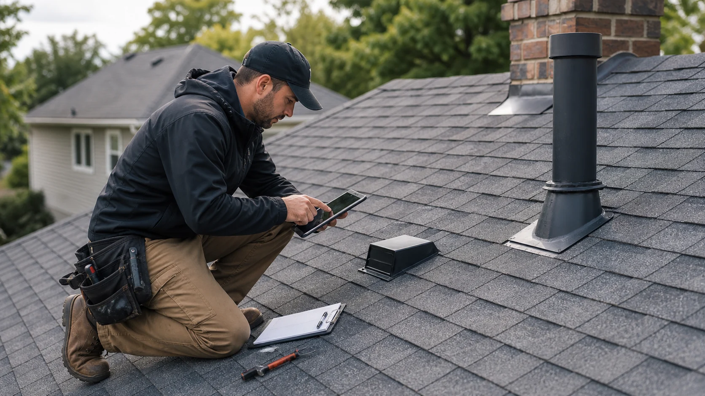

Condition review
Shingle wear, granule loss, curling, cracking, nail exposure, and fastening concerns.
Request roof condition checks for leaks, real estate decisions, maintenance planning, storm review, and replacement timing.
A useful roof inspection looks at the details that decide whether the system can keep shedding water: shingles, flashing, vents, valleys, roof edges, gutters, attic clues, and storm indicators.
RoofLink helps users describe why they need the inspection so independent providers can follow up with the right type of review instead of a vague drive-by opinion.

These examples help you describe the request clearly before independent providers follow up.
Shingle wear, granule loss, curling, cracking, nail exposure, and fastening concerns.
Flashing, chimneys, walls, skylights, pipe boots, vents, valleys, gutters, and roof edges.
Wind creasing, missing tabs, hail bruising, displaced accessories, punctures, and drainage damage.
RoofLink helps organize the details. You still choose who to speak with, what to verify, and whether to hire.
Tell providers whether you need leak tracing, annual maintenance, real estate context, storm documentation, or replacement timing.
Mention roof height, attic access, locked gates, pets, tenants, business hours, or safety constraints.
A helpful inspection separates urgent repair items from maintenance items and future monitoring.
Compare provider notes, photos, and recommendations before approving repair or replacement work.

Provider replies are useful when they help you understand scope, timing, risks, and next steps. Use the first conversation to ask direct questions before approving work.
Photo-supported findingsPhotos make it easier to understand the problem and compare opinions.
Priority levelsAsk what is urgent, what can wait, and what should simply be monitored.
Next-step clarityGood inspection notes explain whether repair, replacement, maintenance, or no action makes sense.
Some roof problems are not emergencies, but these signs usually deserve faster provider follow-up.
A roof issue can change negotiation, budget, or insurance expectations.
Visible damage is not always obvious from the ground.
Knowing roof condition early reduces surprises during buyer inspection.